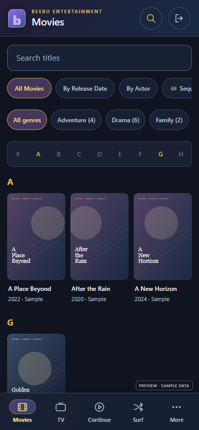

THE LATEST FROM BEEBO
A familiar feeling.
A fresh new look.
Your collection deserves a comfortable place to browse. This update brings Beebo’s purple, marine blue and gold design to the desktop and the browser, with a layout made for smaller screens.
Your library, within reach.
- On your phone: bottom navigation, title search, scrolling filters and an A–Z index, inspired by the Beebo Android app.
- On a larger screen: a familiar sidebar, clearer movie and TV cards, and matching player controls.
- At the campsite: a refreshed guest library with movie and TV filters, search and an easier way back from the player.
The browser uses the features available from its host. Offline downloads and the app’s native tools continue to live in the Android app.

How to get the new look
Watching from your Windows server? Install Windows 0.1.24, reopen Beebo and refresh the browser viewing page. You can also use Check for updates in Beebo Settings.
Sharing from your phone at a campsite? Install Android 1.8 over your existing website app. Start Campsite Mode again, then have guests reload their browser page.
The main website is your place for downloads and guides. Your library’s viewing pages come from your updated Windows computer or campsite host phone.
Build prepared Sun, Sep 13, 2026 at 5:48am Eastern.